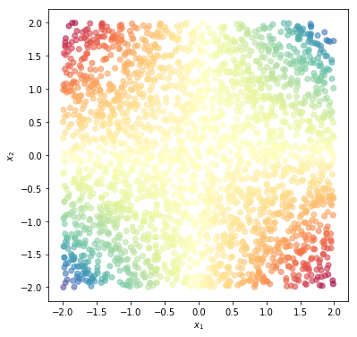
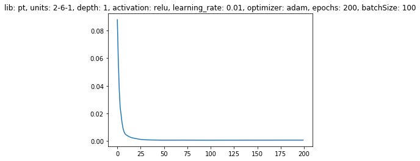

1. Introduction
This post belongs to a new series of posts related to a huge and popular topic in machine learning: fully connected neural networks.
The general series scope is three-fold:
- visualize the model features and characteristics with schematic pictures and charts
- learn to implement the model with different levels of abstraction, given by the framework used
- have some fun with one of the hottest topics right now!
In this new post, we are going to analyze how to train a neural network on toy examples with Pytorch. If you are new to this library, please check out the previous post.

We are going through the following steps:
- training setting
- define the network architecture: dense layer, activation function and stack of layers
- train: loss and accuracy functions, optimizer and learning process
- visualize prediction
Point 2 implies to create a layer class with corresponding weights and biases that need to be learned during train step.
The whole code to create a synthetic dataset and learn a neural network model with any of the four libraries mentioned above is wrapped into a Python class, trainFCNN(), and can be found in my Github repo.
2. Showcase
We start using our trainFCNN class to handle three showcases: regression, binary classification and multi-class classification.
For each case we select one dataset that belongs to that category, show the 2D dataset, train the model, whose parameters’ tensors are shown along with the final loss value, plot the 1D loss history over the number of epochs and visualize the 2D model output alongside the dataset.
Please recall that the training process runs multiple steps (nb_pnt//batchSize) of the optimizer within a single epoch, where nb_pnt is the number of data points and batchSize is the batch size fed to the model at each step of the nested for loop.
2.1 NN model with a regression problem
We visualize the loss history and the model prediction throughout the 2D grid for a regression problem (product of two terms).
tnn = trainFCNN(nb_pnt=2500, dataset='prod')
tnn.plotPoints()

tnn.train(lib='pt', dims=[6], activation='relu', nb_epochs=200, lr=0.01, display=True)
[Parameter containing:
tensor([[ 0.1063, -0.5238],
[ 0.0551, -0.0689],
[ 0.6969, -0.4553],
[-0.2716, -0.2160],
[ 0.5962, -0.6853],
[-0.5633, 0.5369]], requires_grad=True), Parameter containing:
tensor([-0.3887, 0.5459, -0.5066, 0.4369, 0.3743, -0.3240],
requires_grad=True), Parameter containing:
tensor([[ 0.1909, 0.2403, 0.1209, 0.1296, 0.2534, -0.3480]],
requires_grad=True), Parameter containing:
tensor([0.2771], requires_grad=True)]
The final model loss is 0.000740227522328496
plt.plot(tnn.lossHistory)
plt.title(tnn.mdlDescription());

tnn.plotModelEstimate(figsize=(16, 9))
2.2 NN model with binary classification
We visualize the loss history and the model prediction throughout the 2D grid for the XOR problem (binary-classification).
tnn = trainFCNN(nb_pnt=2500, dataset='xor')
tnn.plotPoints()
tnn.train(lib='pt', dims=[6], activation='relu', nb_epochs=200, lr=0.01, display=True)
[Parameter containing:
tensor([[-0.2502, -0.1319],
[-0.4137, 0.6049],
[-0.4000, -0.4091],
[ 0.6447, 0.0499],
[ 0.2987, -0.2987],
[-0.1666, -0.0770]], requires_grad=True), Parameter containing:
tensor([ 0.6503, -0.0564, -0.1120, 0.0814, -0.3941, 0.1590],
requires_grad=True), Parameter containing:
tensor([[ 0.1247, -0.3988, 0.2761, -0.3470, 0.3526, -0.3235]],
requires_grad=True), Parameter containing:
tensor([0.3743], requires_grad=True)]
The final model loss is 0.024880046024918556
Final accuracy: 99.8000%
plt.plot(tnn.lossHistory)
plt.title(tnn.mdlDescription());
tnn.plotModelEstimate(figsize=(16, 9))

2.3 NN model with binary classification
We visualize the loss history and the model prediction throughout the 2D grid for the quadrants problem (multi-class classification).
tnn = trainFCNN(nb_pnt=2500, dataset='quadrants')
tnn.plotPoints()
tnn.train(lib='pt', dims=[6], activation='relu', nb_epochs=200, lr=0.01, display=True)
[Parameter containing:
tensor([[-0.1184, -0.5458],
[ 0.4397, 0.6490],
[-0.4052, -0.6246],
[-0.1402, -0.6364],
[ 0.1619, 0.0099],
[-0.4721, -0.1020]], requires_grad=True), Parameter containing:
tensor([-0.5166, -0.6357, 0.4347, 0.0889, 0.5171, -0.4746],
requires_grad=True), Parameter containing:
tensor([[-0.2764, 0.2313, -0.0404, 0.0681, -0.1637, 0.0032],
[-0.1885, 0.0681, 0.1812, -0.2893, 0.1377, 0.3788],
[ 0.3682, 0.3957, -0.0139, -0.2845, -0.0564, 0.1430],
[ 0.3245, 0.3175, 0.1089, -0.3239, 0.3517, 0.1792]],
requires_grad=True), Parameter containing:
tensor([ 0.0023, 0.2653, -0.0690, -0.0697], requires_grad=True)]
The final model loss is 0.008348659612238407
Final accuracy: 99.8400%
plt.plot(tnn.lossHistory)
plt.title(tnn.mdlDescription());

tnn.plotModelEstimate(figsize=(16, 9))
3. Model setting
The actual process of creating the model and training it over the dataset takes place in the function pytorchModel.
However, the actual code required to create the model graph is wrapped into the ptFCNN class.
It inherits the functionality from the tnn.Module module.
We need to overwrite two methods only:
__init__(): here we define the constructor main components, such as the linear module.forward(): here we construct the actual model graph by connecting the network layers.
The overall process of initializing hyper-parameters, creating the model graph, training the model parameters and defining the model description to easily compare different settings, is controlled with the train function, which is here reported without the if statement used to select one of the four libraries.
def train(self, nb_epochs=100, dims=[2], activation='sigmoid'):
# settings
self.lib = lib
self.LR = lr
self.nb_epochs = nb_epochs
self.batchSize = batchSize
self.activation = activation
self.display = display
self.opt = opt
self.dims = [2] + dims + [self.nb_class if self.kind=='multiCls' else 1]
self.nb_layer = len(self.dims)-1 # number of network layers with learnable parameters
self.lastActFun = 'sigmoid' if self.kind == 'binCls' else 'softmax' \
if self.kind == 'multiCls' else 'linear'
self.pytorchModel()
unitLabel = '-'.join([str(u) for u in self.dims])
self.descrs = {'lib': self.lib, 'units': unitLabel, 'depth': str(len(dims)),\
'activation': activation, 'learning_rate': lr, 'optimizer': opt,\
'epochs': nb_epochs, 'batchSize': batchSize}
4. Model creation
The model instance is created by simply calling the ptFCNN class with three attributes that define the model architecture:
dims: a list containing the number of neurons for each network layer. The first element gives the input dimension (always 2 in our toy tutorial), whilst the last one is the output dimension.activation: the activation function name used in any hidden layer.lastActFun: the activation function name used for the output layer. It is thelinear,sigmoidorsoftmaxfunction for the regression, binary-classification or multi-class classification problem, respectively.
The model instance is mdl.
mdl = ptFCNN(self.dims, self.activation, self.lastActFun)
In Pytorch there is no need to reset the default graph, as it was the case with Tensorflow. This point alleviates some issues during development and debugging.
A second strong benefit relates to how the input/output data can be fed to the model.
We simply need to convert them to Pytorch tensors, that’s it.
Since the process is dynamic, we can inspect the tensor content (actual data) at any time while constructing the model.
It is not necessary anymore to go through the process of defining placeholders in Tensorflow, waiting for the model to be built, starting a new session and use the graph or a part of it to get the actual content for an output variable given input data with the run() callback.
However, the tensor structure of both input/outputs is still a 2D array, except for the output tensor in the multi-class classification (kind == 'multiCls'), since CrossEntropyLoss does not expect a one-hot encoded vector as the target, but class indices.
Further details on this topic can be found here.
The first dimension size is either the batch size during training or the full dataset during accuracy evaluation and model prediction for the 2D grid.
The second dimension is the number of input units of the first layer for xx and the number of output units of the last layer for yy.
Xb = torch.Tensor(XX)
if kind == 'multiCls':
Yb = torch.Tensor(YY).long().reshape(-1)
else:
Yb = torch.Tensor(YY)
As mentioned earlier, the model graph is wrapped into the ptFCNN class.
In the __init__() method we create a list of linear modules using tnn.Linear.
In general, any layer is going to receive the output of the previous layer as input and return what is coming out of the activation function as output.
We create the stack of dense layers by appending a linear transformation tnn.Linear(dIn, dOut) in a for-loop nb_layer times.
The weights and biases of each linear module are initialized with normal distribution with standard deviation stddev to be equal to:
$$ \sigma = \frac{1}{dIn} $$
where dIn the number of inputs of the current layer.
If we want to create the network by feeding a list of module objects that defines the architecture, we can have a more compact code but Pytorch will have a hard time finding the Parameters of the model, i.e., mdl.parameters() will return an empty list.
That’s because appending the module objects to a Python List doesn’t register its parameters.
To fix it, we wrap the list with the ModuleList class and then assign it as a member of the network class.
Thanks Ayoosh Kathuria!
self.fcs = []
self.nb_layer = len(dims)-1
for kk in range(self.nb_layer):
dIn, dOut = dims[kk], dims[kk+1]
self.fcs.append(tnn.Linear(dIn, dOut))
self.fcs = tnn.ModuleList(self.fcs)
We can see the parameter structure with example.
mdl = ptFCNN([2, 3, 5, 6], 'relu', 'sigmoid')
The weights are to be 2D arrays, whose size is the number of outputs and number of inputs.
In Pytorch the weight array is exactly the transpose of the weight array in Tensorflow.
For a network of size dims=[2, 3, 5, 6], the first layer should transform 2 inputs to 3 units, the second layer should transform 3 inputs to 5 outputs and so on so forth.
The biases are to be a 1D arrays, whose size is the number of outputs.
This is what we can get from dims[kk] and dims[kk+1] for the kk layer.
for kk, prm in enumerate(mdl.parameters()):
text = "Weight" if kk%2==0 else "Bias"
print(text + " array size: {}".format(prm.shape))
Weight array size: torch.Size([3, 2])
Bias array size: torch.Size([3])
Weight array size: torch.Size([5, 3])
Bias array size: torch.Size([5])
Weight array size: torch.Size([6, 5])
Bias array size: torch.Size([6])
In the forward() method we construct the actual model graph by connecting the network layers.
Since the previous layer of the first layer is actually the input itself.
we initialize the activation act with the input xx.
The for-loop process is similar to Tensorflow, but it is a bit less verbose in this case.
We get the actual output of the affine transformation zz:
$$ z = W_{k}\cdot a^{k-1} + b_k $$
by retrieving the kk linear module and feeding act_prev as input.
We still need to select the activation function and applied that to zz to get the actual layer output.
The activation coming from the previous layer act_prev is a 2D array with the number of samples as rows and number of inputs into the current layer as columns.
The current weight array has instead the number of outputs as rows and the number of inputs as columns.
The linear module placed in self.fcs[kk] returns the number of samples as rows and the number of outputs as columns.
act = xx # network inputs are the previous layer activations to the first layer
for kk in range(self.nb_layer):
act_prev = act
zz = self.fcs[kk](act_prev)
actFun = self.activation if kk<self.nb_layer-1 else self.lastActFun
if actFun == 'relu':
act = F.relu(zz)
elif actFun == 'sigmoid':
act = torch.sigmoid(zz)
elif actFun == 'tanh':
act = torch.tanh(zz)
elif actFun == 'softmax':
act = F.softmax(zz, dim=1)
elif actFun == 'linear':
act = zz
We use the same logic as previously used for Keras and Tensorflow to define the activation function.
It can be either the user-defined activation or the activation function specified for the last layer.
Any of the activation functions available to the user can be found in the torch or torch.nn.functional module.
However, the two functions sigmoid and tanh have been deprecated in the torch.nn.functional module.
Here you can find the full list of non-linear functions available in the nn module.
The activation function is going to take the output of the previous layer, zz, and return its own output into act.
5. Loss function
This step is meant to define the loss function.
We have three different cases:
- regression: we use mean square error from
nn.MSELoss(). - binary classification: we’re going to use binary cross-entropy
nn.BCEWithLogitsLoss()with logits. That’s why we do not take the last activation output but the lastz_predinstance. Check it out to get the difference withnn.BCELoss(). - multi-classification: we use softmax cross-entropy
nn.CrossEntropyLoss. Feeding the logit outputz_predtoCrossEntropyLossorLogSoftmaxand then the negative log-likelihood lossNLLLossyield identical results.
In every case, we feed the model prediction z_pred and the ground-truth ytb as arguments to the loss function lossFun, to get the final loss, which is what we want to minimize with respect to model parameters with the optimizer.
Please note that z_pred is identical to y_pred in the regression problem.
if self.kind == 'regr':
lossFun = tnn.MSELoss()
elif self.kind == 'binCls':
lossFun = tnn.BCEWithLogitsLoss()
elif self.kind == 'multiCls':
#https://discuss.pytorch.org/t/runtimeerror-multi-target-not-supported-newbie/10216/11
lossFun = tnn.CrossEntropyLoss()
loss = lossFun(z_pred, ytb)
6. Optimizer
The optimizer is going to take care of the learning process. According to the kind of optimizer we choose, it is going to use a specific strategy to optimize the network parameters step by step. The list of different optimizers can be found here and a detailed review of those methods has been published in this great post.
We can use any of the SGD, Adam, RMSprop or Adagrad optimizers, in which we need to feed the model parameters and specify the learning rate LR.
In some optimizers, it is also possible to specify further attributes such as weight decay, momentum and smoothing constant when they apply.
# optimizer
if self.opt=='sgd':
optimizer = torch.optim.SGD(mdl.parameters(), lr=self.LR)
elif self.opt=='adam':
optimizer = torch.optim.Adam(mdl.parameters(), lr=self.LR)
elif self.opt=='rmsprop':
optimizer = torch.optim.RMSprop(mdl.parameters(), lr=self.LR)
elif self.opt=='adagrad':
optimizer = torch.optim.Adagrad(mdl.parameters(), lr=self.LR)
7. Training
The final step is the training process, where Pytorch is going to actually play with data. This is the computational step that requires some time and hardware resources such as GPUs. So far nothing has been calculated, we have just created the model graph structure.
We use our self-made ptNextBatch function to get a batch of examples to perform a forward/backward pass through the model graph and update its parameters to minimize the loss (hopefully!).
The ptNextBatch function selects the next batch of size examples at every iteration jj from the entire dataset and feeds the input/output batch to the model to get the current loss and the new weights.
If we have a multi-class problem, we have to transform the output tensor into the long format and reshape it to a 1D tensor, since the nn.CrossEntropyLoss loss expects the ground-truth class indices as the target, rather than its one-hot encoding representation.
def ptNextBatch(XX, YY, kind, jj=0, size=None):
if size:
XX = XX[jj*size:(jj+1)*size, :]
YY = YY[jj*size:(jj+1)*size, :]
Xb = torch.Tensor(XX)
if kind == 'multiCls':
Yb = torch.Tensor(YY).long().reshape(-1)
else:
Yb = torch.Tensor(YY)
return Xb, Yb
The model is going to learn only when we backpropagate the loss loss.backward() and call the optimizer object, optimizer.step(), that aims at minimizing the loss wrt the parameters.
We train the model for as many epochs nb_epochs and many batches nb_pnt//nb_batch we have initially specified.
At the end of each epoch, we store the current loss into the lossHistory history variable.
lossHistory = []
for epoch in range(self.nb_epochs):
for jj in range(self.nb_pnt//self.batchSize):
optimizer.zero_grad() # zero gradients
xtb, ytb = ptNextBatch(self.XX, self.YY, self.kind, jj, self.batchSize) # batch
y_pred, z_pred = mdl(xtb) # Forward pass
loss = lossFun(z_pred, ytb) # Compute loss
loss.backward() # backpropagation
optimizer.step() # parameter update
lossHistory.append(loss.item())
8. Accuracy
For a classification problem, we do also want to have an accuracy metric.
We take the prediction and the actual output and we count how many time they are equal, i.e., they match each other. The accuracy is just the average of correctly predicted outputs.
If we have a multi-class problem, we have to perform the same step that we did for Keras and Tensorflow.
Let’s retrieve the first output of the model, mdl(xt)[0].
It is y_pred, i.e., the last activation output that gives us the distribution of probabilities over classes and takes the maximum probability index over columns.
That’s why we have to specify torch.max(_, 1), the maximum index has to be column-wise.
For the binary case, we use torch.round to convert the probability of the input to belong to the second class (class 1) into the 2-class index.
For the multi-class case, we use torch.max().indices to get the N-class index.
xt, yt = ptNextBatch(self.XX, self.YY, self.kind)
if self.kind == 'multiCls':
y_pred = torch.max(mdl(xt)[0].data, 1).indices
elif self.kind == 'binCls':
y_pred = torch.round(mdl(xt)[0].data)
if self.kind in ['binCls', 'multiCls']:
correct = (y_pred == yt).sum().item()
self.accuracy = correct/xt.shape[0]
if self.display: print("Final accuracy: {:.4f}%".format(self.accuracy * 100))
9. Model predictions for the grid points
We want to see how the model behaves across the entire 2D domain.
So we take the 2D grid points XXgrd as a batch of examples, convert it into a tensor and feed it to the Pytorch model mdl.
If we have a multi-class problem, we have again to perform the step that returns the index over columns of the highest likely class.
For binary classification and regression, we just have to detach the prediction y_pred and convert it to Numpy.
We then can visualize the 2D array nn_Ygrd with plotModelEstimate.
# grid output
xtest = torch.Tensor(self.XXgrd)
y_pred, z_pred = mdl(xtest)
if self.kind == 'multiCls':
nn_Ygrd = torch.max(y_pred.data, 1).indices.numpy()
else:
nn_Ygrd = y_pred.detach().numpy()
self.nn_Ygrd = nn_Ygrd
We finally save the loss history and the model parameters.
self.lossHistory = np.array(lossHistory)
self.nn_prms = list(mdl.parameters())